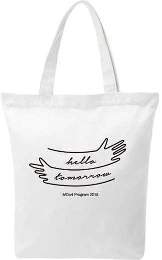

Moart program 2015

Moart program 2015
随着MO art 艺术项目进入第6年，我们深深感到真正的慈善不
仅是解决偏远地区教育资源的一时之急，而是培养更多的优秀
的老师，改变固有的教学思维，提供长期适用的教学课程。2015
年MO art program的主题是“ Hello Tomorrow!”,表达对明天的美
好寄望。只需¥49即可购买一个[MO-art 艺术绘乐盒]捐赠给一
位小朋友，让艺术创作延续下去。我们认为这并不是属于少数人
的慈善项目，而是每个人的使命，为孩子们提供艺术启蒙的机
会，让每一个梦想诞生与延续，为明天喝彩!
【MO-art 藝術繪樂盒】
【MO-art 艺术绘乐盒】由MO&Co.与广东美术馆公共教育部、
广东公益恤孤助学促进公共开发，针对乡村小学生及小学教师的
美术课教学。 很多小朋友并非缺乏创造力和想象力，而是缺少
彩色的绘画材料和适当的引导。[MO-art 艺术绘乐盒]包含6套
课程积极出的创意画材，包括10色 水彩笔和5色油画棒，以及相关
的教学绘图本及材料。6套课程的主题为：颜色、线条、形状、
人物、自然、故事。结合以“观察 — 思考—讨论—创作” 为主线
的课程体系，让学生循序渐进地学会感受艺术、表达自己与进行
团队创作。
Mr.& Ms.Tomorrow 系列T恤
爱心大使韩火火与辣妈超模李丹妮和来自夏令营的小朋友们，为
2015 MO art Program 手把手绘画了“Mr&Ms.Tomorrow”系列T
恤！每一位捐赠 ¥49购买[MO-art 艺术绘乐盒]的朋友，我们将
会为你免费赠送“Mr&Ms.Tomorrow”系列T恤一件，以感谢阁下对
Mo art与公益艺术的支持。